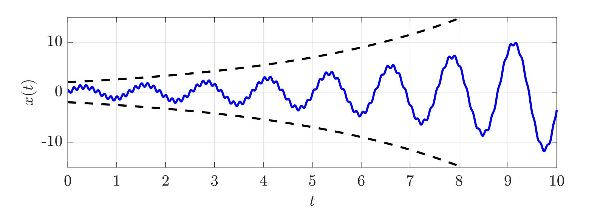

SS 7. AnalysisofCTSystemusingLaplaceTransform
Last Edit: 3/24/26
LTI System with Complex Exponential Inputs #
Recall a LTI System with Impulse Response of $h$, its output in Time Domain is
$$ y(t) = \int_{-\infty}^{\infty} h(t-\tau)x(\tau) , d\tau\quad or\quad y(t) = \int_{-\infty}^{\infty} h(\tau)x(t-\tau) , d\tau $$
Now if the input $x(t)$ is a Complex Exponential Signal $e^{st}$, then the output is
$$ y(t) = \int_{-\infty}^{\infty} h(\tau)e^{s(t-\tau)} , d\tau = \left[ \int_{-\infty}^{\infty} h(\tau)e^{-s\tau} , d\tau \right] e^{st}=H(s)e^{st} $$
Whereas the $H(s)$ is being defined as the Transfer Function
Motivation for transfer function methods #
The Transfer Function we just defined is in the form $H(s) = \int_{-\infty}^{\infty} h(t)e^{-st} , dt$
Comparing it to the original CTFT one $H(j\omega)$ what’s the difference?
Mainly, the CTFT is not always well-defined (Case when the integral diverge), but $H(s)$ turns out can be existed in many situations where $H(j\omega)$ doesn’t
Although the Transfer Function can be developed, here we only analysis cases when
- CT Signals that are Right-Sided
- CT Signals that are LTI and Causal
Signals of Exponential Class #

A Right Sided CT signal $x$ is of Exponential Class if $|x(t)| \le Me^{\sigma t}$ for $t\geq 0$, $M>0$, $\sigma\in \mathbb R$, where the smaller $\sigma$ is labelled $\sigma^*(x)$
The right-sided Laplace Transform #
Suppose x is of exponential class, and let $\mathcal{R}_x = {s \in \mathbb{C} \mid \text{Re}(s) > \sigma^\star(x)}$. The Laplace Transform of $x$ is the complex-valued function
$$ X(s) = \int_{0^-}^{\infty} x(t)e^{-st} , dt $$
- We used $0^-$ to include CT impulse at $t=0$
- $X(s)$ is only defined for $s \in \mathcal{R}_x$, the Region of Convergence
Existence of the Laplace Transform #

Ex. LT of right-sided exponentials #
For $a>0$, consider two signals $x_1(t) = e^{-at}u(t)$ and $x_2(t) = e^{at}u(t)$


Connection between LT and the CTFT #
CTFT is the special case of LT in Imaginary Axis, only when system’s ROC contains the Imaginary Axis of Complex Domain, we can then use the algebric substitution to change LT into CTFT
Recall the previous example signal $x_1$, the ROC of that signal contains the whole Imaginary Axis, thus its legal to directly sub in the $s=j\omega$ into $X_1(s)$
$$ X_1(s) \Big|{s=j\omega} = \frac{1}{s+a} \Big|{s=j\omega} = \frac{1}{j\omega + a}=X_1(j\omega) $$
Important Laplace transforms #

Properties of the Laplace transform #

Response of a causal LTI System and the LT #
The Response of a causal LTI System under LT is just the same as the case in CTFT in mathematic form, however there do exist some differences
If $T$ is a causal LTI, with impulse response $h$ and LT $H(s)$ and RoC $\mathcal R_h$, and $x$ is a right-sided signal with LT $X(s)$ and RoC $\mathcal R_x$, then the Response of the system is
$$ Y(s) = H(s)X(s), \quad s \in \mathcal{R}_y \supseteq \mathcal{R}_h \cap \mathcal{R}_x $$
And it’s Time-Domain Expression would then be a Convolution
$$ y(t) = \int_{0^-}^{t} h(t - \tau)x(\tau) , d\tau, \quad t \geq 0 $$

Ex. Use LT to find the response for RC circuit #


Analysis of LICC-ODEs via Laplace Transform #
Recall the LICC-ODE
$$ Q(D)y(t) = P(D)x(t) $$
For every unique input $x(t)$ it will give a unique output $y(t)$, whereas the $Q(D)$ and $P(D)$ are two Linear Differential Operators $Q(D) = D^n + a_{n-1}D^{n-1} + \dots + a_1D + a_0$ and $P(D) = b_mD^m + b_{m-1}D^{m-1} + \dots + b_1D + b_0$
Here we also defined $D\xi(t) = \frac{d\xi(t)}{dt}$ as the dervative operation
We are going to use Laplace Transform to compute the Impulse Response of this causal LTI System, and the key idea is to take the LT of both sides, thus we get
$$ (s^n + a_{n-1}s^{n-1} + \dots + a_1s + a_0)Y(s)=(b_ms^m + b_{m-1}s^{m-1} + \dots + b_1s + b_0)X(s) $$
Rearrange them to get
$$ H(s) = \frac{Y(s)}{X(s)} = \frac{b_ms^m + b_{m-1}s^{m-1} + \dots + b_1s + b_0}{s^n + a_{n-1}s^{n-1} + \dots + a_1s + a_0} = \frac{P(s)}{Q(s)} $$
Thus we can conclude that the transfer function of an LTI system defined by a LICC-ODE is very easy to find, and is often the preferred way for us
Furthermore, we want to translate this $H(s)$ back to Time Domain, as the $H(s)$ is now in rational form, we need to
- Factoring the denominator
- Partial Fraction Expansion
- Inverse Laplace Transform term by term
If $m\leq n$, then we will get the Impulse Response in the form of
$$ h(t) = b_0\delta(t) + \left[ \sum_{k=1}^{n} b_k t^{m_k} e^{p_k t} \sin(\omega_k t + \phi_k) \right] u(t) $$
Ex. The Series RLC circuit #

Steady-State Interpretation of the frequency response #
In the previous part, we defined Frequency Response $H(j\omega)$ as the response of a LTI System to two-sided Complex Exponential, i.e. $x(t) = e^{j\omega_0 t}$ is a two sided signal and its resposne is $y(t) = H(j\omega_0)e^{j\omega_0 t}$
But now the input has become right-sided and causal, like $x(t) = e^{j\omega_0 t}u(t)$
Here we first assume impulse response $h$ has finite action, so $T$ is BIBO stable ($x(t) = e^{j\omega_0 t}u(t)$), and its result would be
$$ y(t) = H(j\omega_0)x(t) - F(t)x(t) $$
- $H(j\omega_0)x(t)$: The Steady-State Response, indicates that if the system has runed for enough time, then the output will be a signal with same frequency, amplitude scalling $|H(j\omega_0)|$ and Phasor shifting $\angle H(j\omega_0)$
- $F(t)x(t)$: The Transient Response, as our signal is right-sided and causal, thus there need to be a transient feedback for system then it first get the input, and this term $F(t) \to 0$ as $t\rightarrow \infty$
The convergence of F(t) #
As long as the system is BIBO Stable, we can prove that $F(t)$ will eventually become zero
Ex. Steady-state response of RC circuit #

Steady-state interpretation of the frequency response #
For a causal and BIBO stable CT LTI system
- The response to a sinusoidal input is sinusoidal in steady-state
- the s.s. response has the same frequency as the input
- the s.s. response amplitude is the input amplitude times $|H(j\omega_0)|$
- the s.s. response phase is the input phase plus a shift of $\angle H(j\omega_0)$
To measure that BIBO steady system, we can apply a sinusoidal input and record the output